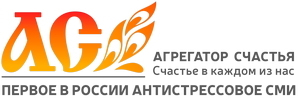
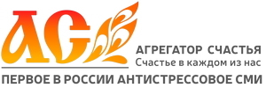
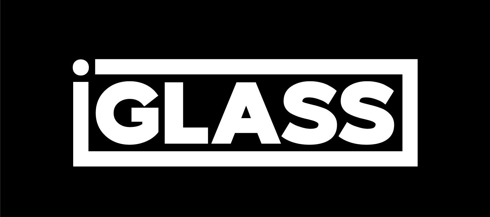
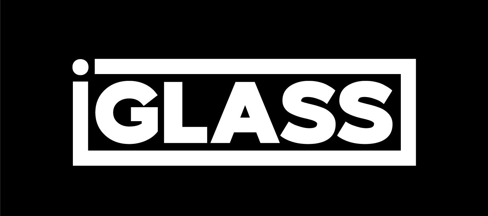

Детский кинофестиваль "Детский глобус - МИР глазами детей"
🎯 Миссия
Создание международной платформы для поддержки и развития детского кинематографа, где юные авторы могут представлять свои работы, обмениваться опытом и получать профессиональную оценку.
Мы верим, что каждый ребенок имеет уникальный взгляд на мир, и кино — это мощный инструмент для выражения детских идей, мечтаний и переживаний.
👁️ Видение
Стать ведущим международным фестивалем детского кино, который объединяет юных кинематографистов со всего мира, способствует культурному обмену и открывает новые таланты.
Создание сообщества, где дети через кино учатся понимать друг друга, преодолевать культурные барьеры и вместе создавать будущее.
Основатели и организаторы

Юлиана Борисова
Президент фестиваля, основатель
Инициатор создания международного детского кинофестиваля. Более 10 лет работает в сфере детского образования и культурных проектов.
Жанна Трифонова
Вице-президент
Опытный организатор культурных мероприятий, куратор образовательных программ для детей. Отвечает за общую стратегию развития фестиваля.

Артем Асташкин
Программный директор, технический руководитель
Отвечает за формирование конкурсной программы, техническую организацию показов и координацию работы жюри. Имеет опыт организации международных культурных мероприятий.
История проекта
Идея и концепция
Разработка концепции международного детского кинофестиваля. Формирование команды и поиск партнеров.
Первый фестиваль
Проведение I Московского международного детского кинофестиваля. Участие 12 стран, 80 фильмов.
Расширение географии
II фестиваль прошел в Москве, Сочи и Алагире. Увеличение количества участников до 15 стран.
Институционализация
Развитие образовательной программы.
Международное признание
Планы по расширению сотрудничества с международными фестивалями и организациями.
Цели и задачи
🎬 Поддержка детского кинематографа
Выявление и поддержка талантливых юных кинематографистов, создание условий для развития их творческого потенциала.
🌍 Межкультурный диалог
Создание платформы для культурного обмена между детьми разных стран через искусство кино.
📚 Образовательная программа
Проведение мастер-классов, лекций и воркшопов с профессионалами киноиндустрии.
👁️ Новый взгляд на детское кино
Формирование нового представления о возможностях и содержании детского кинематографа.
Партнеры и поддержка
 

 

Контакты
Официальный сайт: det-kinofest.ru
Email: info@det-kinofest.ru
Телефон: +7 (916) 499-10-10
Адрес: Москва, Российская Федерация